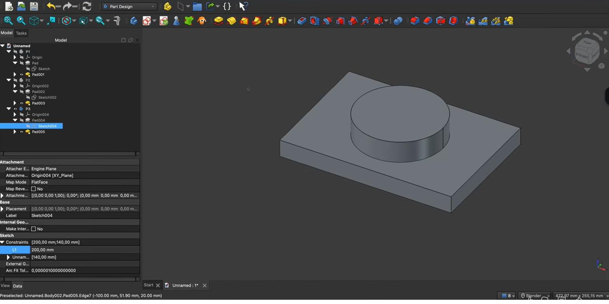

Varianten: meerdere maten van één ontwerpVariantes : plusieurs tailles d'un modèleVariants: several sizes of one design
Eén parametrisch model (H20) levert moeiteloos meerdere maatvarianten op: een behuizing in S/M/L voor verschillende printplaten, of een knop in drie diameters. Je maakt een kopie van het model en wijzigt één sturende parameter — klaar.Un modèle paramétrique (H20) donne plusieurs variantes : un boîtier S/M/L, un bouton en trois diamètres. Copiez et changez un paramètre.One parametric model (H20) yields several size variants: an enclosure in S/M/L, or a knob in three diameters. Copy the model and change one driving parameter.
- maatvarianten van een onderdeel makencréer des variantes de taillemake size variants of a part
- varianten apart bekijken en beherengérer et afficher les variantesmanage and view variants separately
- varianten aansturen vanuit een spreadsheetpiloter les variantes par tableurdrive variants from a spreadsheet
Werk vanuit je parametrische model (H20). Een variant = een kopie van de body met een andere parameterwaarde.Partez du modèle paramétrique (H20). Une variante = une copie avec une autre valeur.Start from your parametric model (H20). A variant = a copy of the body with a different parameter value.
- Hernoem je eerste body naar P1 (variant 1).Renommez le 1ᵉʳ corps en P1.Rename your first body to P1.
- Selecteer de body → Ctrl+C → Ctrl+V: er verschijnt een tweede body. Noem hem P2.Corps → Ctrl+C/Ctrl+V → P2.Select the body → Ctrl+C → Ctrl+V: a second body appears. Name it P2.
- Wijzig in P2 de sturende parameter (bv. de lengte, of de spreadsheet-waarde). Nu is het een andere maat.Changez le paramètre de P2.In P2, change the driving parameter (e.g. the length or the spreadsheet value).
- Gebruik de spatiebalk om varianten apart te tonen. Herhaal voor P3 enzovoort.Espace pour afficher ; répétez pour P3.Use Space to view variants separately. Repeat for P3, etc.
01Wat is een variant?Qu'est-ce qu'une variante ?What is a variant?
Een variant is hetzelfde ontwerp in een andere maat. Omdat je model parametrisch is (H20), hoef je niet opnieuw te tekenen: je verandert één sturende parameter en de hele vorm past zich aan. Zo hou je meerdere maten van hetzelfde onderdeel netjes in één bestand, elk als een eigen body (P1, P2, P3 …).Une variante = le même modèle, une autre taille. Grâce au paramétrique, un seul paramètre suffit ; chaque taille est un corps (P1, P2…).A variant is the same design at another size. Because the model is parametric (H20), you don't redraw: change one driving parameter and the whole shape adapts. Keep several sizes in one file, each its own body (P1, P2, P3 …).
02Varianten makenCréer des variantesMaking variants
De aanpak uit de praktijk: hernoem je model naar P1, kopieer de body (Ctrl+C/Ctrl+V) naar P2, en geef P2 een andere waarde voor de sturende parameter. Herhaal voor P3. Met de spatiebalk schakel je de zichtbaarheid van elke variant aan en uit, zodat je ze één voor één bekijkt of naast elkaar zet.Renommez en P1, copiez en P2, changez le paramètre ; Espace pour la visibilité. Répétez (P3).Rename to P1, copy the body to P2, give P2 a different driving value. Repeat for P3. Use Space to toggle each variant's visibility.

03Nog netter: aansturen via de spreadsheetEncore mieux : via le tableurCleaner: drive from the spreadsheet
Heb je in H20 een spreadsheet gemaakt, dan kun je elke variant aan een eigen set waarden koppelen. De eenvoudigste werkwijze: pas in de tabel de kernparameters aan en bewaar telkens onder een eigen naam, of hou per variant een kopie met andere waarden. Zo blijft alles parametrisch en herleid je elke maat tot één tabel.Avec un tableur (H20), pilotez chaque variante par ses valeurs ; tout reste paramétrique.With a spreadsheet (H20), tie each variant to its own values. Adjust the table's key parameters per size — everything stays parametric and traceable to one table.
Een variant is een kopie van je parametrische model met een andere parameterwaarde. Dankzij H20 verander je één getal en krijg je een complete nieuwe maat — geen hertekenwerk.Une variante = copie paramétrique + une valeur changée.A variant is a copy of your parametric model with one changed value. Thanks to H20, one number gives a whole new size — no redrawing.
Geef varianten duidelijke namen (P1/P2/P3, of beter: Klein/Middel/Groot). Gebruik de spatiebalk om er telkens maar één te tonen, en exporteer (H23) de variant die je nodig hebt.Noms clairs (Petit/Moyen/Grand) ; Espace pour n'en montrer qu'une.Give variants clear names (Small/Medium/Large). Use Space to show one at a time, and export (H23) the one you need.
Maak je behuizing in drie maten voor drie veelgebruikte printplaten. Eén bestand bevat Klein, Middel en Groot; je print gewoon de variant die past bij het project van vandaag.Un boîtier en trois tailles pour trois PCB ; imprimez celle qu'il faut.Make your enclosure in three sizes for three common PCBs. One file holds Small, Medium, Large; print the one that fits today's project.
Maak van je bak drie maatvarianten. Hernoem het origineel naar P1, kopieer naar P2 en P3, en geef elk een andere lengte (bv. 80, 100, 120 mm). Bekijk ze één voor één met de spatiebalk en kies welke je zou printen.Trois variantes (P1/P2/P3) à longueurs différentes ; affichez-les via Espace.Make three size variants of your box. Rename the original to P1, copy to P2 and P3, give each a different length (e.g. 80, 100, 120 mm). View them with Space.
04Veelgemaakte foutenErreurs fréquentesCommon mistakes
- Het origineel wijzigen i.p.v. kopiëren. Dan verlies je de eerste maat. Kopieer eerst (Ctrl+C/Ctrl+V), wijzig daarna.Modifier l'original. Copiez d'abord.Editing the original instead of copying. Copy first (Ctrl+C/V), then change.
- Bodies niet hernoemen. Body, Body001, Body002 … wordt onoverzichtelijk. Gebruik sprekende namen.Corps non renommés. Noms clairs.Not renaming bodies. Use meaningful names.
- Alles tegelijk zichtbaar. Varianten vallen over elkaar. Toon er één met de spatiebalk.Tout visible. Affichez-en une (Espace).All visible at once. Variants overlap. Show one with Space.
05Samenvatting
Een variant is hetzelfde parametrische ontwerp in een andere maat. Je maakt er een door de body te kopiëren (Ctrl+C/Ctrl+V) en de sturende parameter te wijzigen; met de spatiebalk bekijk je elke variant apart. Nog netter stuur je ze aan vanuit een spreadsheet (H20). Zo hou je meerdere maten in één bestand en print je gewoon wat je nodig hebt.Une variante = même modèle, autre taille : copiez (Ctrl+C/V), changez le paramètre, Espace pour afficher ; pilotez via tableur (H20).A variant is the same parametric design at another size: copy the body (Ctrl+C/V), change the driving parameter, view each with Space. Drive them from a spreadsheet (H20). Keep several sizes in one file and print what you need.
- Variant = kopie van het parametrische model + andere parameterwaarde.Variante = copie + valeur changée.Variant = copy + changed parameter.
- Ctrl+C/Ctrl+V de body; spatie toont er één.Ctrl+C/V ; Espace.Ctrl+C/V the body; Space shows one.
- Sprekende namen + aansturing via spreadsheet (H20).Noms clairs + tableur (H20).Clear names + spreadsheet drive (H20).